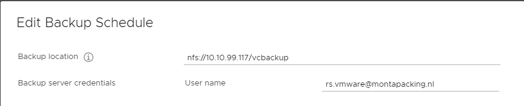
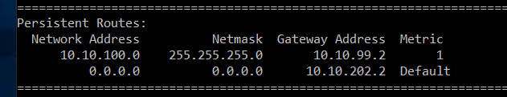
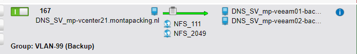

Backup MP vCenter21
Inleiding
Om eventueel een restore uit te kunnen voeren van de vCenter-server is het handig om deze te backuppen.
De MP-vCenter21 staat echter in het management-vlan.
Dit document beschrijft wat er extra ingesteld moet worden om deze server met Veaam te kunnen backuppen.
De MP-VCenter21 is toegevoegd aan de job "Zaterdagbackup_Weekly_Rotterdam".
Dit levert een VM-backup op, maar hieruit kun je niet alleen de configuratie restoren.
Daarnaast wordt er daarom een configuratie-backup vanuit mp-vcenter21 naar de c-schijf van de MP-VEEAM02 gemaakt.
Dit document beschrijft hoe e.e.a. ingericht moet worden.
Backup MP-vCenter21
Op de vcenter-server (benaderen via poort 5480 en dan tabblad "backup" is aangegeven dat de backuplocatie "nfs://10.10.99.117/vcbackup" is.
10.10.99.117 is het IP-nr van de mp-veeam02.

Op de MP-VEEAM02 moet aangegeven worden dat het management-vlan via de gateway van het backup-vlan benaderd moet worden.
Anders werkt de communicatie tussen de mp-vcentre21 en de mp-veeam02 niet.
Hiervoor moet een persistent route worden toegevoegd:
route -p add 10.10.100.0 MASK 255.255.255.0 10.10.99.2
Door het backuppen van de C-schijf van de MP-VEEAM02 wordt de vcenter21-backup gebackupd.
Met netstat -rn is de static route te zien. 
Voor het backuppen van de vcenter server moeten de poorten 111 en 2049 voor tcp/udp open staan naar de veaam-proxy-servers op het backup-adres.
